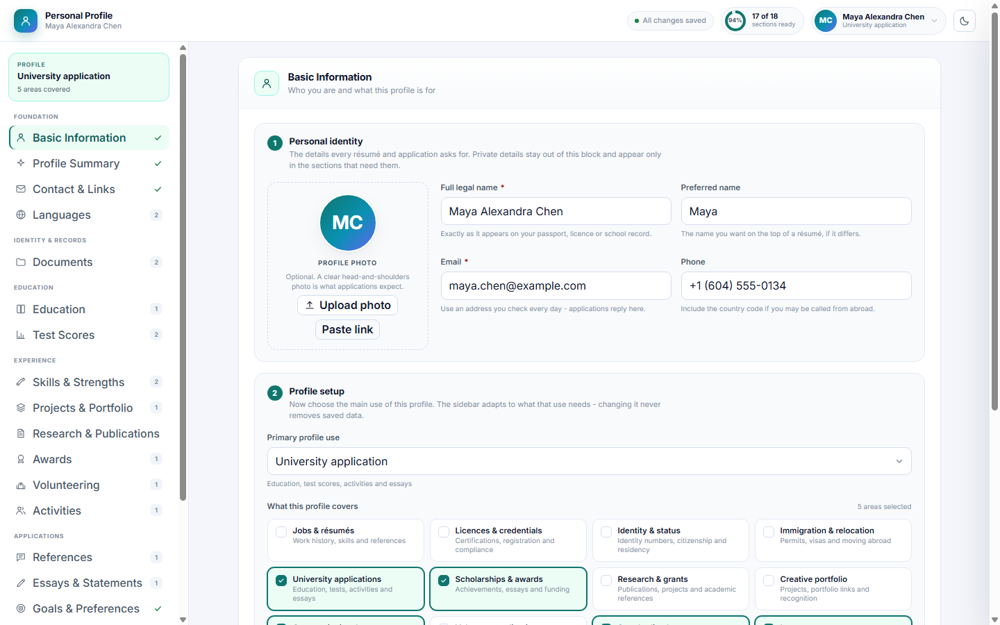
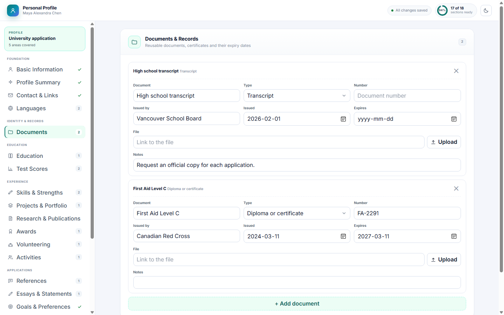

Personal Profile keeps your identity, education, work, skills and references in one place, then reshapes itself for a resume, a university application, a scholarship, an immigration form or a volunteer role.
Pick the application in front of you and the sidebar keeps only the sections it needs.
Eleven profile uses and fourteen focus areas decide which sections show. Switching never deletes a saved answer.
Date of birth, nationality, marital status, gender and pronouns appear only for profiles that need them - and personal details, identity, health, funding and documents stay out of exports until you include them.
Copy a plain-text summary for a form or take the full record as JSON when a system accepts it.
A checklist shows what is missing for the chosen use, and documents inside 90 days of expiry are flagged.
Essays, references, test scores, publications, service hours, preferences and funding live in the same record.
Add extra fields to any section, or a whole custom section, without waiting for a new version of the tool.

Choose the profile use and the tool suggests the areas that use needs. Adjust them with one click whenever the next application asks for something different.

Documents, certifications, test scores and references are tracked as records with dates, numbers and links, so you know what is current before a deadline.
No setup, no import step, no configuration screen.
Basic Information starts with your photo, name, email and phone, then asks what the profile is for. Every card under "What this profile covers" can be switched on or off.
Statements and list entries read as cards; press Edit on the one you need and start from the example if the wording is unclear.
Open the avatar menu, choose Share & export, check the readiness list, then copy the summary or take the JSON with you.
The same facts, kept current and shaped for each application.
| The usual way | Personal Profile | |
|---|---|---|
| Reusing answers | ✕ Retype the same details in every form | ✓ One record feeds every application |
| Knowing what is current | ✕ Discover an expired document at submission | ✓ Expiry warnings and a readiness checklist |
| Sharing safely | ✕ Copy everything and delete the private parts by hand | ✓ Personal details and sensitive sections excluded from exports by default |
Keep grades, test scores, activities, service and essays ready for several university and scholarship applications.
Hold work history, skills, references and preferences together, then copy the summary into any application form.
Keep identity, status, health, insurance and language records in one place for immigration and relocation paperwork.
No. It only changes which sections the sidebar shows. Every saved value stays in the record, and Show all sections brings every section back.
Yes. Switch the use, fill what the new application needs, then switch back - education, work and references are reused.
The record stores the link and file name only. The file itself stays wherever the link points.
Anyone who can open the record in the workspace. Personal details, identity and health stay out of exports by default, but access to the record itself is controlled by the platform.
Because most applications never ask for it. Date of birth, nationality, marital status, gender and pronouns live in Personal Details, which appears only for immigration, government and health profiles. The tool asks for the year, and the full date only when an official form requires it.
Behind your avatar in the top right. The menu opens Share & export as a panel, so the section list stays about your data - never about tool actions.
No. A new record starts with the basic sections only; choose a profile use and the related sections appear. Every optional parameter only seeds or narrows that choice.
Browse real screenshots of Personal Profile with sample data - click any image to open it full size.
Screenshots show the tool with sample data - the real tool connects to your own workspace. Read the help guide
Keep them once, keep them current, and stop retyping them into every form.
See how it works